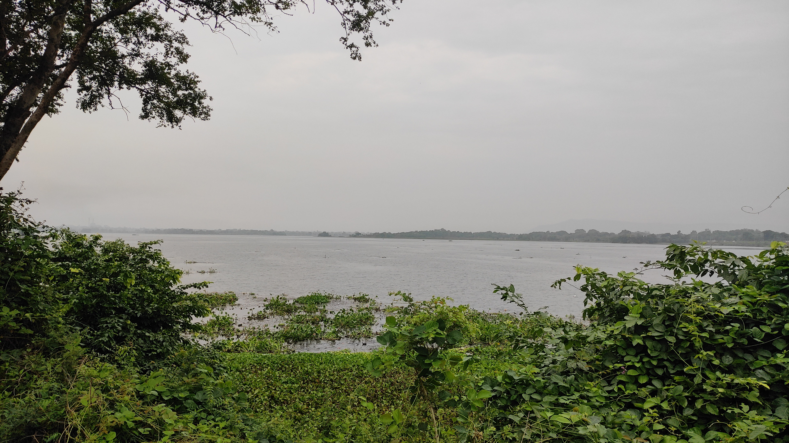
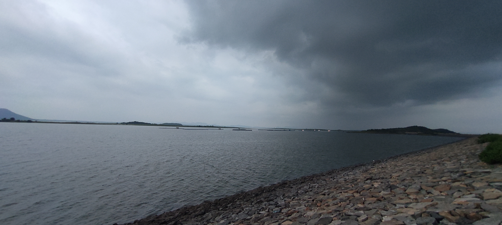
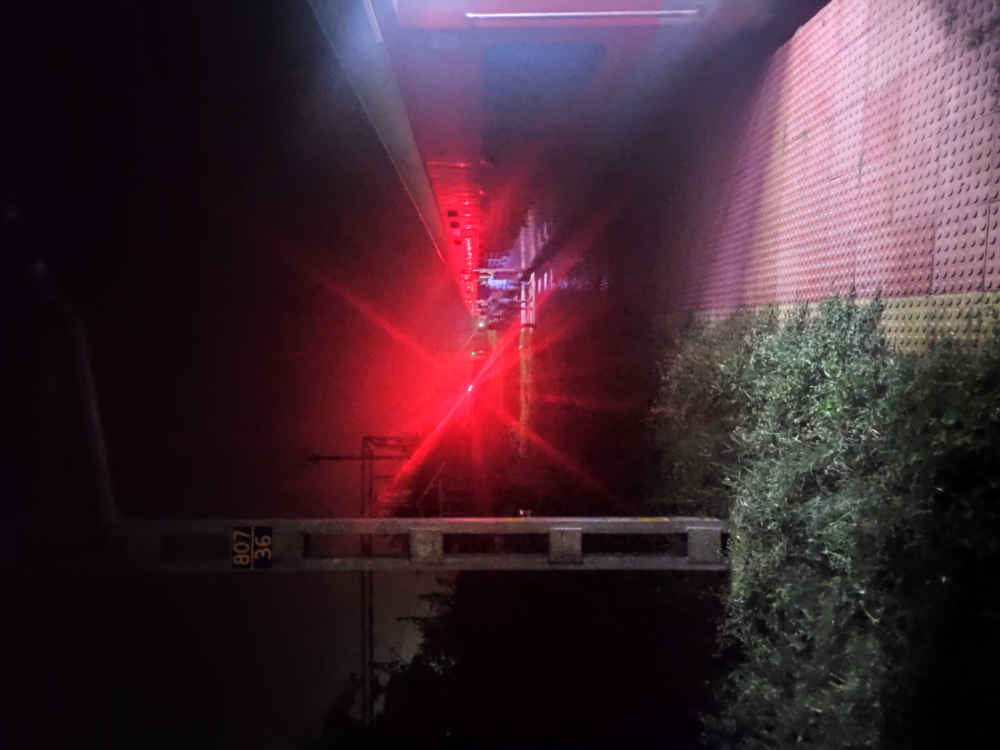
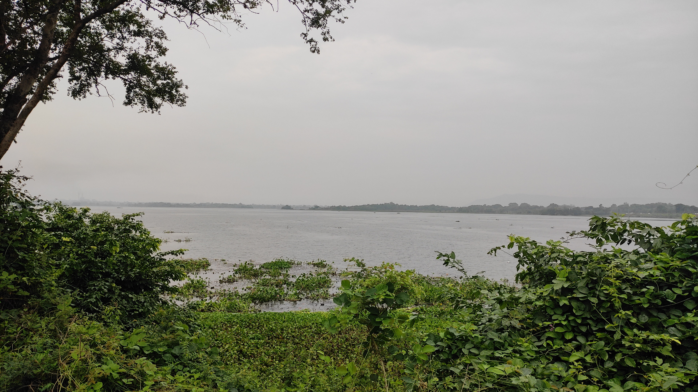
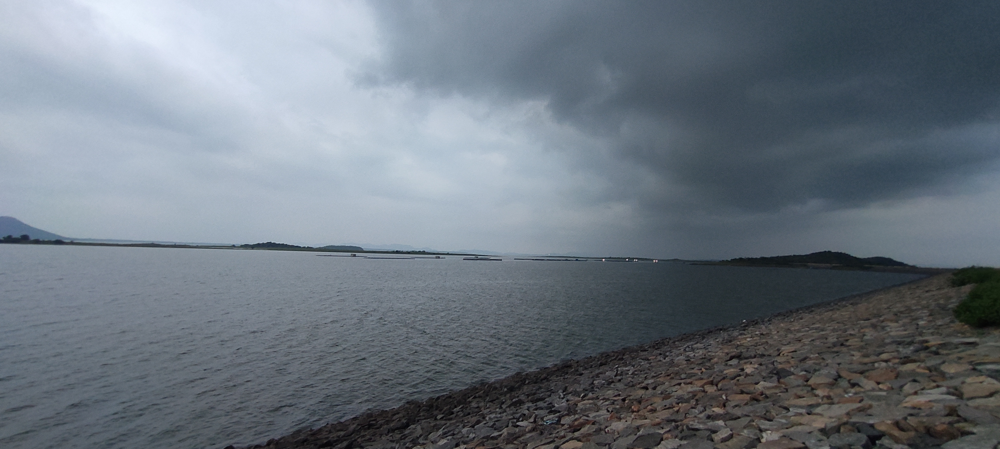
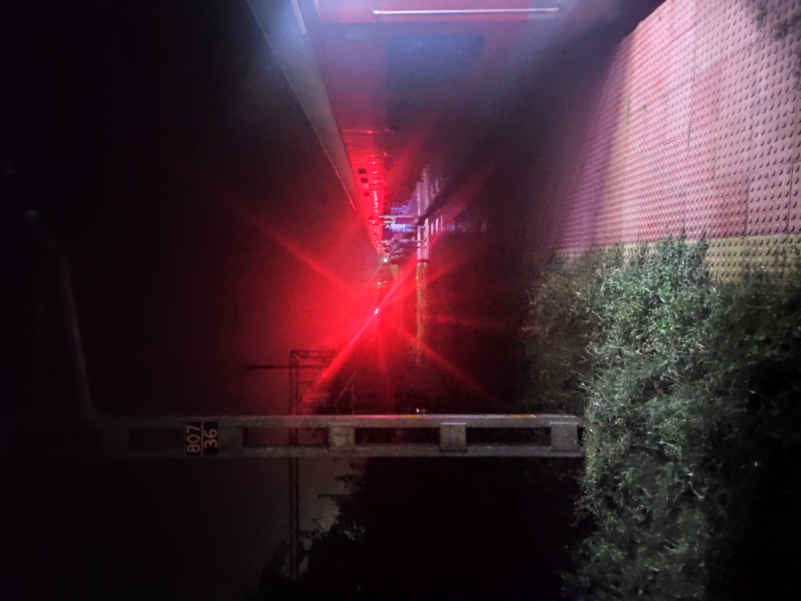
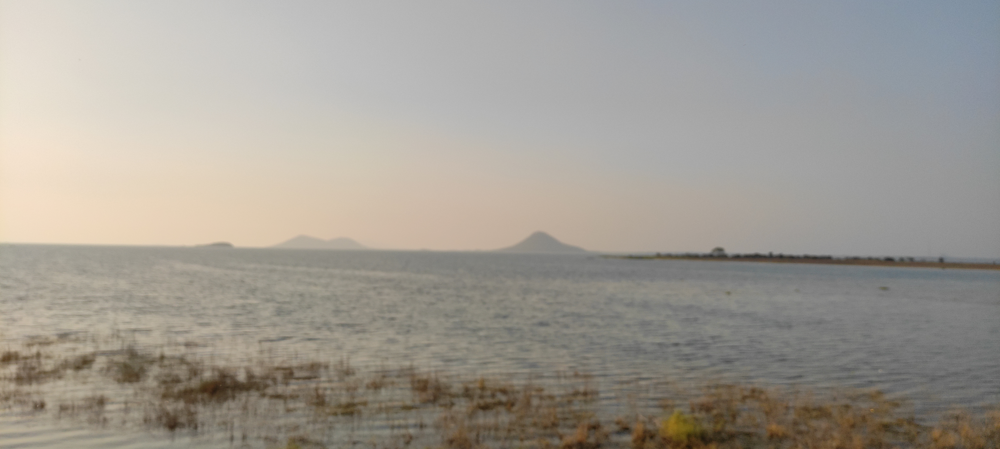
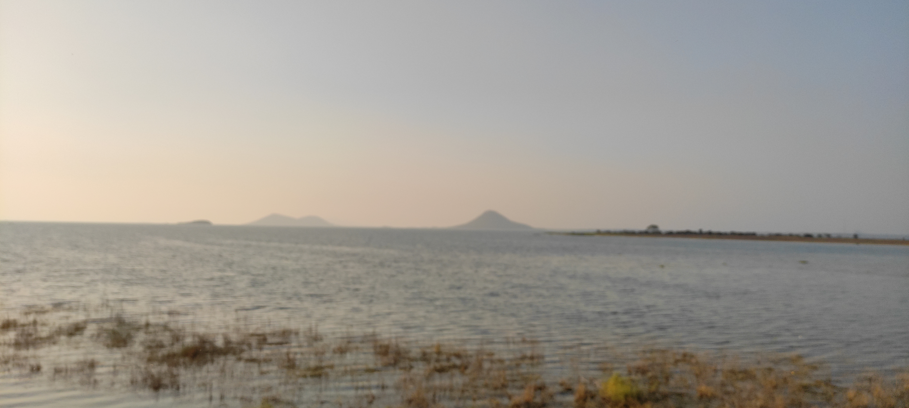
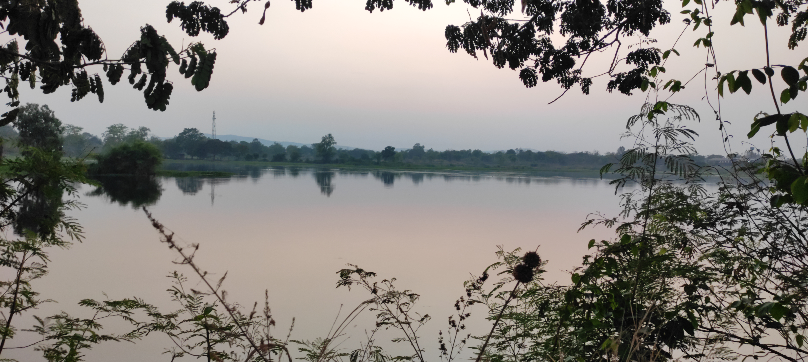
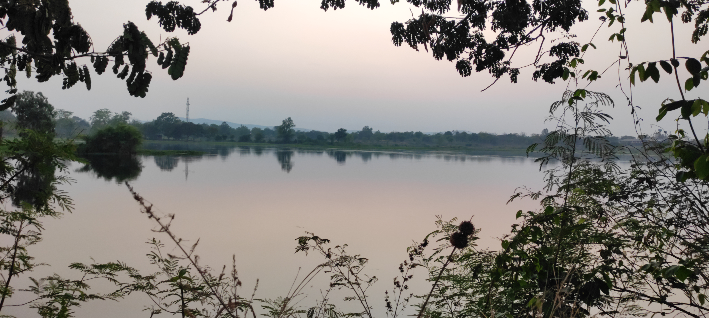

Introduction
Welcome to my website! I'm Tanay Banerjee.
My journey is a mix of coding, photography, cricket, chess, and entrepreneurship. Each of these activities helps me grow personally and professionally by blending creativity, strategy, and innovation.
Coding is my main technical skill, helping me create software and solve difficult problems. Through coding, I’ve learned to think logically and fix issues efficiently. It’s not just about writing code but understanding technology deeply to build useful solutions.
Photography sharpens my attention to detail. It allows me to capture meaningful moments and see the world in new ways. It teaches me patience, creativity, and the importance of perspective, which helps in solving problems and developing projects.
Cricket teaches me the value of teamwork and strategic planning. Success on the cricket field requires coordinated efforts, clear communication, and the ability to adapt. These lessons apply directly to my work in business and technology, where collaboration and strategic thinking are key.
Chess improves my analytical skills and ability to plan ahead. The game requires careful planning, patience, and anticipating the opponent’s moves. These skills are useful in technology and entrepreneurship, helping me to foresee market trends, understand user needs, and plan for the future.
Entrepreneurship allows me to combine my technical skills with strategic vision. It drives innovation and makes a real impact. As an entrepreneur, I’ve learned to identify opportunities, take risks, and turn ideas into reality. This experience has taught me resilience, adaptability, and the power of a growth mindset.
I’ve also worked as a freelancer, which has broadened my skills and experience. Freelancing has taught me time management, clear communication with clients, and delivering high-quality work consistently. It has also given me insights into different industries and the ability to adapt my skills to various needs.
Additionally, I have knowledge of share market trading, cryptocurrency, and blockchain. This knowledge adds another layer to my skills, giving me insights into financial markets and digital currencies. Understanding trading and blockchain technology has given me a unique view of how technology and finance intersect, opening new avenues for innovation in my work.
This diverse journey makes me a well-rounded person, good at balancing technical knowledge, creative ideas, and strategic planning. Each part of my journey—coding, photography, cricket, chess, entrepreneurship, freelancing, and knowledge of financial markets—intertwines to create a rich, multifaceted experience. This experience not only reflects my varied interests and skills but also shows my continuous growth, adaptability, and passion for using technology to make a meaningful difference.
Gallery


 






 

 



Interests
About Me
Hello! I'm Tanay Banerjee, hailing from the vibrant city of Sambalpur. My educational journey began at St. Joseph's Convent Higher Secondary School, Sambalpur, where I completed my matriculation. I then continued my studies at Madnawati Public School, Sambalpur, for my intermediate education.
Currently, I am pursuing a Bachelor of Technology degree in Civil Engineering at Veer Surendra Sai University of Technology, Burla, formerly known as University College of Engineering, Burla. This academic pursuit is more than just a degree for me; it’s a path to explore the fascinating world of engineering and to contribute to shaping the infrastructure of tomorrow.
My journey is a blend of diverse interests and passions, including coding, photography, cricket, chess, and entrepreneurship. These pursuits have not only enriched my personal growth but have also equipped me with a unique skill set that harmonizes technical expertise, creative insight, and strategic thinking.
Whether it's developing innovative software solutions, capturing the beauty of the world through my lens, strategizing on the cricket field or chessboard, or driving business innovation, I am always eager to learn and evolve. Additionally, my experience as a freelancer and my knowledge in share market trading, cryptocurrency, and blockchain add depth to my professional repertoire.
Welcome to my world, where creativity meets strategy, and passion drives innovation. Let's connect and create something amazing together!